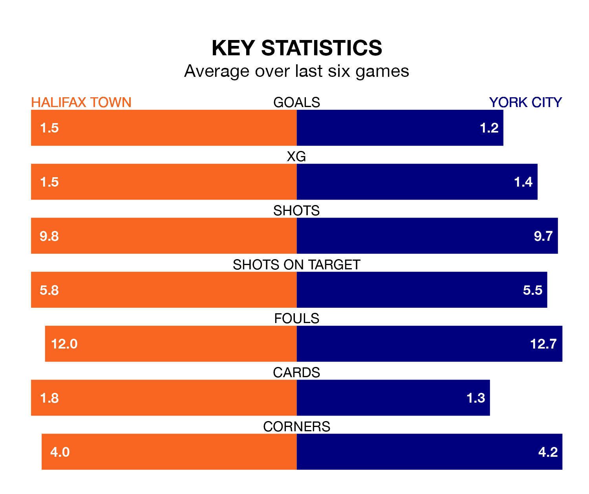

York City visit Halifax Town at the Shay Stadium on Monday on the back of three consecutive wins in the National League.
York have picked up 10 points from their last six games, and they face a Shaymen side who lost their last match, and have collected 12 points from the last possible 18.
With 52 goals in 42 games so far this season, York are scoring at below the league average rate with 1.2 goals per game. And they are conceding more than average, letting in 66 goals at a rate of 1.6 per game.
Halifax are also below average scorers, with 1.2 goals per game, compared to a league average of 1.5. They have conceded 1.1 goals per game.
Town are ninth in the table after 40 games, of which they have won 17 and drawn 11, earning 62 points.
City are seven places behind the Shaymen in 16th, with 11 wins and 16 draws putting them on 49 points.
In the last three years, Halifax and York have played each other on three occasions. Halifax won two of them and they drew once.
Their last meeting was on October 28, when they played out a 1-1 draw.
Halifax's last match was on Friday, a 1-0 loss against Hartlepool United.
York beat Chesterfield 2-1 last time out, also on Friday, with Dipo Akinyemi and Maziar Kouhyar on the scoresheet.
Updated: 10:31 (UTC), 31/03/24